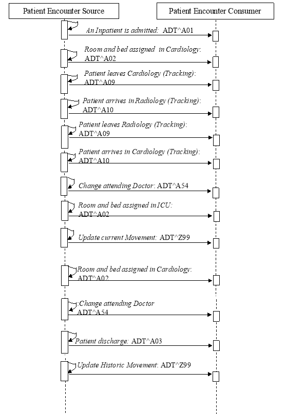
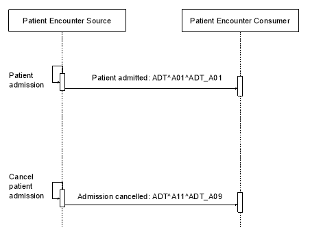

IHE IT Infrastructure (ITI)
Technical Framework
Revision 16.0 – Final Text
This example illustrates the use of [ITI-31] with the following options:
Robert LAW arrives from home to Saint-Louis Hospital. Operator Janine WHITE registers Robert in the administrative systems and creates a new account for billing. The reason of admission is a surgery of the heart, and Robert is under the responsibility of Cardiology. Before the surgery, a chest X-Ray and an electrocardiogram have to be performed. After the surgery, Robert is transferred to the Intensive Care Unit for 2 days. The transfer to the ICU is entered with two errors (wrong bed, wrong time). This transfer is corrected with the appropriate values. Then Robert is transferred back to Cardiology. Two weeks after admission, Robert is sent back home. Later on, his last movement in cardiology is corrected.
Table P.1.1-1: Storyboard Attribute Values
| Objects | Attributes |
| Patient |
Legal name: Robert LAW ID: 12345 Sex: male Date of birth: October 2 nd 1946 Billing Account Number: 987654 |
| Administrative Operator |
Legal name: Janine WHITE, ID: 1001 Legal name: Eva STRAW, ID: 1002 Legal name: Betty GARDNER, ID: 1003 Legal name: Jana BLACKMORE, ID: 1004 |
| Assigning Facility | Saint-Louis Hospital |
| Attending Doctors |
Legal name: Charles BROWN, ID: 2001 Legal name: Ray JOHNSON, ID: 2002 |
| Family Doctor | Legal name: Bob FAMILY, ID 7777 |
| Medical Departments |
Name: Cardiology, Code: 6043, Bed: 1, Room: 200 Name: Cardiology, Code: 6043, Bed: 3, Room: 202 Name: Radiology, Code: 5001 Name: ICU, Code: 5050, Bed: 1, Room: 430 |
The following diagram illustrates the interactions used in this example. The acknowledgement messages are not shown.
Operator Janine White admits Robert Law as an Inpatient in the administrative system of Saint-Louis Hospital. She creates a new billing account number (987654). The attending doctor of Robert Law is Doctor Charles Brown, during Robert’s stay in the Cardiology department.
MSH|^~\&|?|Saint-Louis|?|Saint-Louis|20050530082015|| ADT^A01^ADT_A01 |000001|T|2.5|||||FRA|8859/15|EN
EVN||20050530082000||| 1001^WHITE^Janine | 20050530082000
PID|1|| 12345^^^Saint-Louis^PI ||LAW^Robert^^^^^L|||M||||||||||
987654^^^Saint-Louis^AN
ROL||AD|FHCP|7777^FAMILY^Bob
PV1|1|I||||| 2001^BROWN^Charles
ZBE|mvt1| 20050530082000 ||INSERT|N
Robert LAW arrives in Cardiology and a secretary (Eva STRAW) validates the arrival by assigning a room and a bed to the Patient. Had the bed been assigned at admission time, the patient location would have been part of the ADT^A01 message.
MSH|^~\&|?|Saint-Louis|?|Saint-Louis|20050530082015|| ADT^A02^ADT_A02 |000001|T|2.5|||||FRA|8859/15|EN
EVN||20050530082500||| 1002^STRAW^Eva | 20050530082500
PID|1|| 12345^^^Saint-Louis^PI ||LAW^Robert^^^^^L|||M||||||||||
987654^^^Saint-Louis^AN
PV1|1|I| 6043^200^1^Saint-Louis
ZBE|mvt2| 20050530082500 ||INSERT|N
The electrocardiogram is performed in the Cardiology department. However, Robert needs to be transferred to Radiology for the chest X-Ray. This move to a temporary location is tracked by two messages: A09 when departing the cardiology, A10 when arrived in Radiology. These tracking events are not Movements, and don’t use the ZBE segment.
MSH|^~\&|?|Saint-Louis|?|Saint-Louis|20050530082015|| ADT^A09^ADT_A09 |000001|T|2.5|||||FRA|8859/15|EN
EVN||20050530123000|||1002^STRAW^Eva| 20050530122500
PID|1|| 12345^^^Saint-Louis^PI ||LAW^Robert^^^^^L|||M||||||||||
987654^^^Saint-Louis^AN
PV1|1|I|||| 6043^200^1^Saint-Louis ||||| 5001^^^Saint-Louis
MSH|^~\&| ?|Saint-Louis| ?|Saint-Louis|20050530082015|| ADT^A10^ADT_A09 |000001|T|2.5|||||FRA|8859/15|EN
EVN||20050530123000|||1003^GARDNER^Betty| 20050530123000
PID|1|| 12345^^^Saint-Louis^PI ||LAW^Robert^^^^^L|||M||||||||||
987654^^^Saint-Louis^AN
PV1|1|I|||| 6043^200^1^Saint-Louis ||||| 5001^^^Saint-Louis
When the X-Ray is performed, Robert leaves the Radiology department and comes back to Cardiology. Two other movement-tracking messages are generated.
MSH|^~\&|?|Saint-Louis|?|Saint-Louis|20050530082015|| ADT^A09^ADT_A09 |000001|T|2.5|||||FRA|8859/15|EN
EVN||20050530123000|||1002^STRAW^Eva| 20050530125000
PID|1|| 12345^^^Saint-Louis^PI ||LAW^Robert^^^^^L|||M||||||||||
987654^^^Saint-Louis^AN
PV1|1|I| 6043^200^1^Saint-Louis ||||||||||||||||||||||||||||||||||||||| | 5001^^^Saint-Louis
MSH|^~\&|?|Saint-Louis|?|Saint-Louis|20050530082015|| ADT^A10^ADT_A09 |000001|T|2.5|||||FRA|8859/15|EN
EVN||20050530123000|||1002^STRAW^Eva| 20050530125500
PID|1|| 12345^^^Saint-Louis^PI ||LAW^Robert^^^^^L|||M||||||||||
987654^^^Saint-Louis^AN
PV1|1|I| 6043^200^1^Saint-Louis ||||||||||||||||||||||||||||||||||||||| | 5001^^^Saint-Louis
The surgery is planned for the next day. When the surgery is completed, Robert LAW is transferred to the Intensive Care Unit for 2 days. Ray JOHNSON is the new attending physician during these 2 days.
MSH|^~\&|?|Saint-Louis|?|Saint-Louis|20050530082015|| ADT^A54^ADT_A54 |000001|T|2.5|||||FRA|8859/15|EN
EVN||20050531114000|||1002^STRAW^Eva| 20050531114000
PID|1|| 12345^^^Saint-Louis^PI ||LAW^Robert^^^^^L|||M||||||||||
987654^^^Saint-Louis^AN
PV1|1|I||||| 2002^JOHNSON^Ray
ZBE|mvt3| 20050531114000 ||INSERT|N
When Robert LAW arrives in ICU, a secretary (Jana BLACKMORE) validates the arrival by assigning a room and a bed. She makes two typing mistakes (wrong bed, wrong time)
MSH|^~\&|?|Saint-Louis|?|Saint-Louis|20050530082015|| ADT^A02^ADT_A02 |000001|T|2.5|||||FRA|8859/15|EN
EVN||20050531114400|||1004^BLACKMORE^Jana| 20050531114400
PID|1|| 12345^^^Saint-Louis^PI ||LAW^Robert^^^^^L|||M||||||||||
987654^^^Saint-Louis^AN
PV1|1|I| 5050^430^11^Saint-Louis ||| 6043^200^1^Saint-Louis
ZBE|mvt4| 20050531114400 ||INSERT|N
After Robert LAW is moved to his new bed, Jana BLACKMORE corrects the two mistyping in the movement.
MSH|^~\&|?|Saint-Louis|?|Saint-Louis|20050530082015|| ADT^Z99^ADT_A01 |000001|T|2.5|||||FRA|8859/15|EN
EVN||20050531114400|||1004^BLACKMORE^Jana| 20050531115800
PID|1|| 12345^^^Saint-Louis^PI ||LAW^Robert^^^^^L|||M||||||||||
987654^^^Saint-Louis^AN
PV1|1|I| 5050^430^ 1 ^Saint-Louis ||| 6043^200^1^Saint-Louis
ZBE|mvt4| 20050531104400 || UPDATE |N| A02
After 2 days, Robert LAW leaves the ICU and comes back to Cardiology. A new room and bed are assigned to the Patient.
MSH|^~\&|?|Saint-Louis|?|Saint-Louis|20050530082015|| ADT^A02^ADT_A02 |000001|T|2.5|||||FRA|8859/15|EN
EVN||20050601161200|||1002^STRAW^Eva| 20050601161200
PID|1|| 12345^^^Saint-Louis^PI ||LAW^Robert^^^^^L|||M||||||||||
987654^^^Saint-Louis^AN
PV1|1|I| 6043^202^2^Saint-Louis ||| 5050^430^1^Saint-Louis
ZBE|mvt5| 20050601161200 ||INSERT|N
MSH|^~\&| ?|Saint-Louis| ?|Saint-Louis|20050530082015|| ADT^A54^ADT_A54 |000001|T|2.5|||||FRA|8859/15|EN
EVN||20050601161000|||1004^BLACKMORE^Jana| 20050601161200
PID|1|| 12345^^^Saint-Louis^PI ||LAW^Robert^^^^^L|||M||||||||||
987654^^^Saint-Louis^AN
PV1|1|I||||| 2001^BROWN^Charles
ZBE|mvt6| 20050601161200 ||INSERT|N
After 12 days, Robert LAW is discharged and sent back home.
MSH|^~\&|?|Saint-Louis|?|Saint-Louis|20050530082015|| ADT^A03^ADT_A03 |000001|T|2.5|||||FRA|8859/15|EN
EVN||20050613180000|||1001^WHITE^Janine| 20050613180000
PID|1|| 12345^^^Saint-Louis^PI ||LAW^Robert^^^^^L|||M||||||||||
987654^^^Saint-Louis^AN
PV1|1|I| 6043^200^1^Saint-Louis |||||||||||||||||||||||||||||||||1
ZBE|mvt7| 20050613180000 ||INSERT|N
One hour later the Cardiology corrects an error of both time and bed in the last patient assigned location in cardiology, triggering an update of the Historic Movement identified as mvt5:
MSH|^~\&|?|Saint-Louis|?|Saint-Louis|20050530082015|| ADT^Z99^ADT_A01 |000001|T|2.5|||||FRA|8859/15|EN
EVN||20050601161200|||1002^STRAW^Eva| 20050613190000
PID|1|| 12345^^^Saint-Louis^PI ||LAW^Robert^^^^^L|||M||||||||||
987654^^^Saint-Louis^AN
PV1|1|I|6043^202^ 3 ^Saint-Louis|||5050^430^1^Saint-Louis
ZBE|mvt5| 20050601161233 || UPDATE | Y | A02
This example uses transaction [ITI-31] without any option, to illustrate a cancellation message:
Operator Janine WHITE registers an admission for patient Robert LAW in the administrative system of Saint-Louis Hospital. After a while it turns out that the patient has been directed to the wrong hospital. The patient is redirected to another hospital and the admission is cancelled.
Table P.2.1-1: Storyboard Attribute Values
| Objects | Attributes |
| Patient |
Legal name: Robert LAW ID: 12345 Sex: male Date of birth: October 2 nd 1946 Billing Account Number: 987654 |
| Administrative Operator | Legal name: Janine WHITE, ID: 1001 |
| Assigning Facility | Saint-Louis Hospital |
| Attending Doctors |
Legal name: Charles BROWN, ID: 2001 Legal name: Ray JOHNSON, ID: 2002 |
| Family Doctor | Legal name: Bob FAMILY, ID 7777 |
The following diagram illustrates the interactions used in this example. The acknowledgement messages are not shown.
Figure P.2.2-1: Interaction Diagram
Operator Janine White admits Robert Law as an Inpatient in the administrative system of Saint-Louis Hospital. She creates a new billing account number (987654). The attending doctor of Robert Law is Doctor Charles Brown.
MSH|^~\&|?|Saint-Louis|?|Saint-Louis|20050530082015|| ADT^A01^ADT_A01 |000001|T|2.5|||||FRA|8859/15|EN
EVN||20050530082000||| 1001^WHITE^Janine | 20050530082000
PID|1|| 12345^^^Saint-Louis^PI ||LAW^Robert^^^^^L|||M||||||||||
987654^^^Saint-Louis^AN
ROL||AD|FHCP|7777^FAMILY^Bob
PV1|1|I||||| 2001^BROWN^Charles
ZBE|mvt1| 20050530082000 ||INSERT|N
OBX||NM|3142-7^BODY WEIGHT (STATED)^LN||62|kg|||||F
OBX||NM|8303-0^BODY HEIGHT^LN||1.70|m|||||F
The patient is redirected afterwards to another hospital. Janine White cancels the admission.
MSH|^~\&|?|Saint-Louis|?|Saint-Louis|20050530084400|| ADT^A11^ADT_A09 |000001|T|2.5|||||FRA|8859/15|EN
EVN||20050530084350||| 1001^WHITE^Janine | 20050530082000
PID|1|| 12345^^^Saint-Louis^PI ||LAW^Robert^^^^^L|||M||||||||||
987654^^^Saint-Louis^AN
PV1|1|I||||| 2001^BROWN^Charles
ZBE|mvt1| 20050530082000 ||CANCEL|N
The following examples are available for information purposes on the IHE ftp site . See ITI TF-2x: Appendix W.
The examples are organized by transaction.